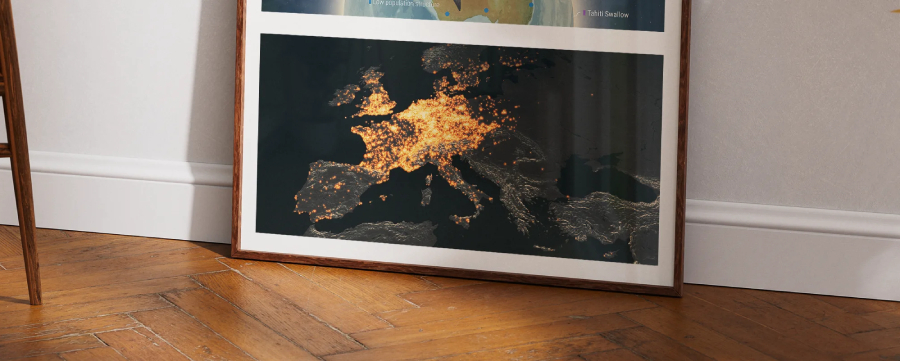
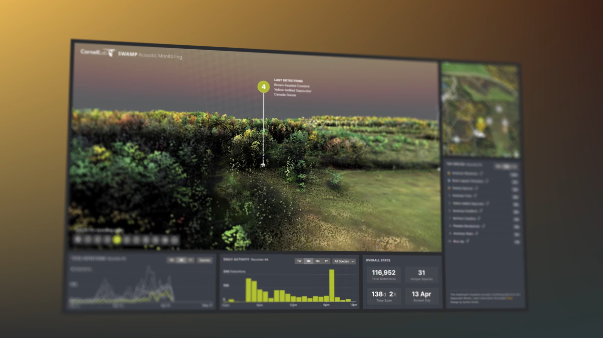

About Me
I am an ecological data scientist and researcher with a background in biology, anthropology, and
visual
communication. My work focuses on the analysis and interpretation of large-scale biodiversity
datasets,
including citizen science surveys and bioacoustic monitoring. I have extensive experience designing
analytical pipelines, developing reproducible research workflows, and collaborating with diverse
stakeholders to deliver actionable scientific outputs. My expertise includes spatiotemporal
modeling,
data visualization, and project leadership in conservation science. I am committed to advancing open
science and supporting evidence-based conservation policy and practice.
Work Experience
Postdoctoral Researcher – Ecological Data Science
University of Oxford
Mar 2024 – Present
Lead research on biodiversity monitoring using sensor networks and deep learning. Develop and
deploy
analytical pipelines for quantifying bird and bat diversity across time and space. Advise on
ecological research design, teach statistics, programming, and AI, and collaborate with internal
and external partners on monitoring and new ways of working with large ecological datasets.
Data Visualization Consultant
Cornell Lab of Ornithology
Jan 2025 – Present
Design and implement interactive data visualizations for
ecological research and public engagement within the
BirdNET project.
Use modern web technologies (Svelte, D3.js, Three.js, TypeScript) to communicate complex
ecological data to diverse audiences, including museum visitors and citizen scientists.
Student Tutor & Guest Lecturer
University of Oxford
Oct 2022 – Present
Teach and supervise in ecology, bioacoustics, programming, and statistics. Mentor undergraduate
and master's students, supervise programming projects, and deliver training on reproducible
research, version control, and high-performance computing.
Doctoral Researcher – Computational Ecology
University of Oxford
Oct 2019 – Oct 2023
Developed computational methods for bioacoustic analysis and studied cultural evolution in bird
songs. Specialized in spatiotemporal modeling, quantitative research, and scientific
communication. Managed large datasets and published peer-reviewed research.
Second Unit Director & Cinematographer
Dubai Films LLC | Awaken
2012 – 2017
Coordinated and directed international film units (4-10 people) on location in Ukraine,
Belarus,
Romania, Mongolia, UK, Spain, Sweden, Norway, UAE. Specialized in wildlife cinematography,
high-speed cinematography, and project coordination in challenging environments.
Camera and Jib Operator, Assistant Camera
Voyage of Time: IMAX (Malick 2016)
2011 – 2012
US unit (California, Wyoming, Montana)
Portfolio Highlights

Insights from large-scale biodiversity data. University of Oxford.

Interactive 3D dashboard for real-time
bioacoustic monitoring. Cornell University.

ML model & app for classifying tree species
from drone data. University of Oxford.
Core Skills
Programming & Data Science
R (advanced statistical modeling, time series, spatiotemporal analysis)
Python (NumPy, pandas, PyTorch)
Reproducible research and reporting, analytical pipelines
Git, bash, LaTeX
Data management, citizen science data, ecological modeling
Python (NumPy, pandas, PyTorch)
Reproducible research and reporting, analytical pipelines
Git, bash, LaTeX
Data management, citizen science data, ecological modeling
Computing & Infrastructure
Cloud & HPC computing (AWS, parallel programming)
Unix/Linux systems
Large dataset curation (>10TB)
Multi-node GPU training
Unix/Linux systems
Large dataset curation (>10TB)
Multi-node GPU training
Data Visualization & Communication
Data visualization & scientific illustration
D3.js, Svelte, Three.js
Adobe Creative Suite, Figma
Scientific writing, presentations, stakeholder engagement
D3.js, Svelte, Three.js
Adobe Creative Suite, Figma
Scientific writing, presentations, stakeholder engagement
Research & Project Leadership
Ecological analysis & bioacoustics
Project design & management
Teaching & mentoring
Collaboration with diverse teams
Peer-reviewed publication
Project design & management
Teaching & mentoring
Collaboration with diverse teams
Peer-reviewed publication
Education
PhD in Biology
University of Oxford, UK
2019 – 2023
Developed computational and statistical methods for
ecological data analysis and visualization, focusing on
cultural
evolution and population dynamics in birds. Managed large datasets and published peer-reviewed
research.
BSc in Anthropology (First-Class Honours)
Durham University, UK
2016 – 2019
Studied evolutionary anthropology, cultural diversity, and research methods. Participated in
projects on cultural variation in music and visual art.
Bacc. in Visual Arts
IES M.G. Aragon, Spain
2010 – 2012
Studied illustration, painting, graphic design, video editing.
Key Publications
Recent Breakthrough
The demographic drivers of cultural evolution in bird song - Published in Current Biology (2025), this work demonstrates how population demographics shape cultural transmission in wild populations, showing how acoustic monitoring can reveal population dynamics beyond presence/absence and density.
Featured in:
The demographic drivers of cultural evolution in bird song
Current Biology, 35 1-10 (2025)
A densely sampled and richly annotated acoustic dataset from a
wild bird population
Animal Behaviour, 211, 111-122 (2024)
pykanto: A Python library to accelerate research on wild bird
song
Methods in Ecology and Evolution, 14(8), 1994–2002 (2023)
Islands Promote Diversification of the Silvereye Species Complex:
A Phylogenomic Analysis of a Great Speciator
Molecular Ecology (2025)
The genetic consequences of dispersal and immigration in a wild
great tit population
bioRxiv (2025)
Selected Talks
The demographic drivers of cultural evolution in bird song
3rd Joint Congress on Evolutionary Biology, Montreal, Canada (2024)
Guest lecture: Computational approaches to bioacoustics
Cornell Lab of Ornithology, Cornell University (2024) - Watch recording
Guest lecture: Cultural evolution in bird song
Max Planck Institute for Empirical Aesthetics, Frankfurt (2023)
Cultural evolution in the wild:
tracking the landscape of learning in bird song
Congress of the European Society for Evolutionary Biology, Prague
(2022);
Cultural Evolution Society Conference, Aarhus, Denmark (2022)
Cultural Evolution Society Conference, Aarhus, Denmark (2022)
Awards & Recognition
Clarendon & Mary Frances Wagley Scholarship
2019
Edward Grey Institute Graduate Scholarship
2022
Best Poster - Oxford University Graduate Symposium
2022
Durham Undergraduate Research Scholarship
2018
V Astillero Video Art Contest - First Prize
2012
NHM Wildlife Photographer of the Year - Highly Commended
2008
Languages
- Spanish Native
- English Full professional proficiency
- Portuguese Basic